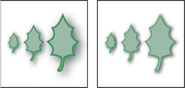

Scale objects
Scaling an object enlarges or reduces it horizontally (along the x axis), vertically (along the y axis), or both. Objects scale relative to a reference point which varies depending on the scaling method you choose. You can change the default reference point for most scaling methods, and you can also lock the proportions of an object.
By default, strokes and effects are not scaled along with objects. To scale strokes and effects, choose Edit > Preferences > General (Windows) or Illustrator > Preferences > General (Mac OS), and select Scale Strokes & Effects. If you want to choose whether to scale strokes and effects on a case-by-case basis, use the Transform panel or the Scale command to scale objects.

 Scale objects with the Scale tool
Scale objects with the Scale tool
- Do any of the following:
-
To scale relative to the object’s center point, drag anywhere in the document window until the object is the desired size.
-
To scale relative to a different reference point , click where you want the reference point to be in the document window, move the pointer away from the reference point, and then drag until the object is the desired size.
-
To maintain the object’s proportions as it scales, hold down Shift as you drag diagonally.
-
To scale the object along a single axis, hold down Shift as you drag vertically or horizontally.
 For finer control over scaling, start
dragging farther from the reference point.
For finer control over scaling, start
dragging farther from the reference point. -
Scale objects with the bounding box
Scale objects to a specific width and height
You can also maintain proportions
by entering a value in the W or H box, and then pressing Ctrl (Windows)
or Command (Mac OS) while you press Enter.Scale objects by a specific percentage
- Select one or more objects.
- Do one of the following:
-
To scale from the center, choose Object > Transform > Scale or double-click the Scale tool .
-
To scale relative to a different reference point, select the Scale tool and Alt‑click (Windows) or Option‑click (Mac OS) where you want the reference point to be in the document window.
-
- In the Scale dialog box, do one of the following:
-
To maintain the object’s proportions as it scales, select Uniform, and enter a percentage in the Scale text box.
-
To scale the height and width separately, select Non-Uniform, and enter a percentage in the Horizontal and Vertical text boxes.
The scale factors are relative to the reference point and can be negative or positive.
-
- To scale stroked paths and any size-related effects along with the object, select Scale Strokes & Effects.
- If the objects contain a pattern fill, select Patterns to scale the pattern. Deselect Objects if you want to scale the pattern but not the objects.
- Click OK, or click Copy to scale a copy of the objects.